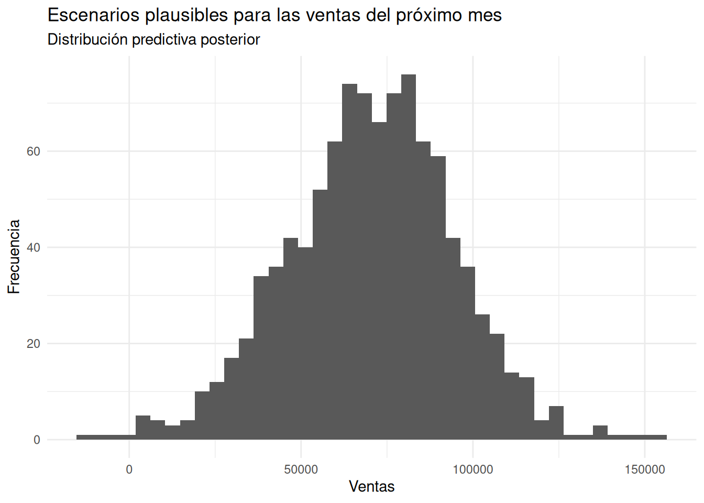
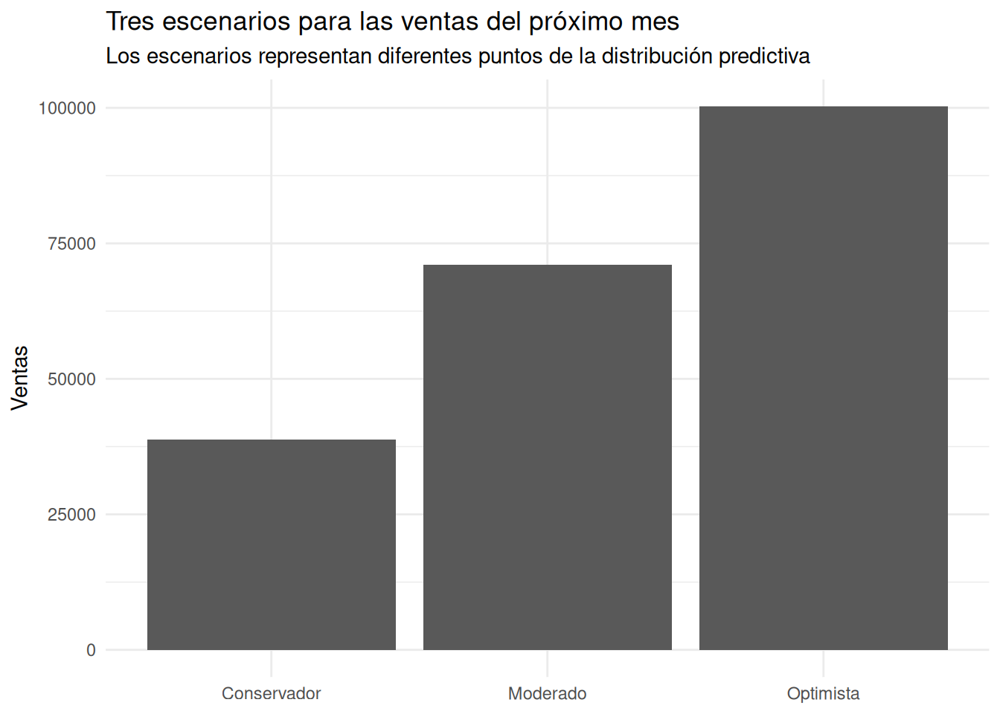
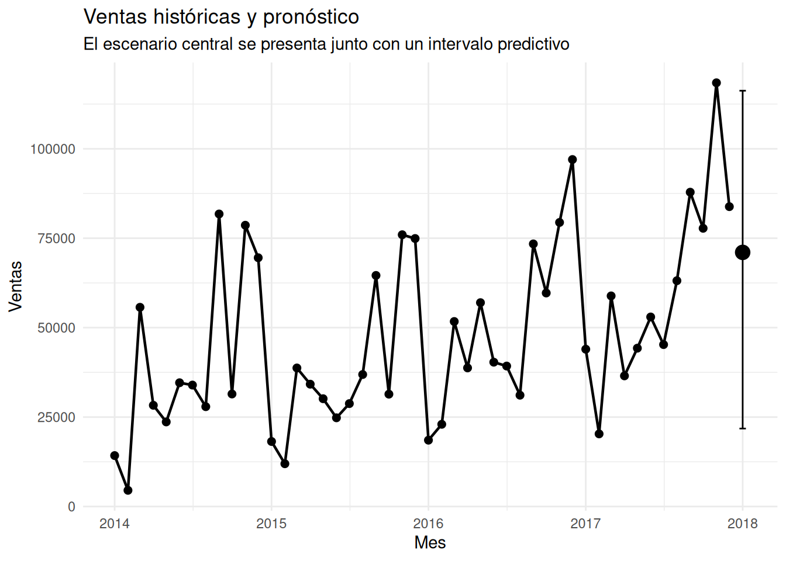

superstore <- read_csv("../../data/superstore_sales.csv")¿Cómo comunicar un pronóstico sin crear una falsa sensación de certeza?
Retail
Forecasting
Comunicación
Aprende a comunicar un pronóstico bayesiano de ventas mostrando escenarios plausibles e incertidumbre para tomar decisiones de negocio más informadas.
¿Cómo comunicar un pronóstico sin crear una falsa sensación de certeza?
1. La pregunta de negocio
Cuando una persona responsable de un negocio pregunta:
¿Cuánto vamos a vender el próximo mes?
parece que está solicitando un único número.
Podríamos responder:
“Esperamos vender aproximadamente $70.000”.
La respuesta es sencilla y fácil de comunicar.
Pero también puede ser engañosa.
El problema es que el futuro no viene acompañado de un número exacto. Una predicción representa un escenario plausible condicionado por la información disponible. Por eso, una buena comunicación del pronóstico no debería limitarse a presentar una cifra central.
Debería responder también preguntas como:
- ¿Qué tan probable es que las ventas sean menores?
- ¿Qué tan alto podrían llegar?
- ¿Qué escenario deberíamos utilizar para planificar?
- ¿Cuánta incertidumbre existe alrededor de la predicción?
Aquí aparece una de las ventajas del enfoque bayesiano: en lugar de producir únicamente un valor puntual, podemos trabajar con una distribución predictiva.
Esta entrada utiliza el mismo modelo sencillo de ventas que construimos anteriormente. Nuestro objetivo ahora no es construir un modelo más sofisticado, sino aprender a comunicar correctamente lo que el modelo nos está diciendo.
2. Del pronóstico puntual a los escenarios
Supongamos que nuestro modelo produce una predicción central cercana a $70.000.
Podríamos comunicarla así:
“Las ventas del próximo mes serán de aproximadamente $70.000”.
Pero esa frase transmite una seguridad que el modelo realmente no tiene.
Una alternativa más honesta sería:
“El escenario central del modelo se encuentra alrededor de $70.000, pero existen escenarios plausibles considerablemente menores y mayores”.
Esta diferencia parece pequeña, pero cambia completamente la interpretación.
La primera frase presenta el futuro como un número.
La segunda presenta el futuro como un rango de posibilidades.
Eso es precisamente lo que queremos explorar en esta entrada.
3. Los datos: ventas mensuales
Trabajaremos nuevamente con Superstore Sales.
La variable temporal original es Order Date. Antes de utilizarla, comprobamos su estructura y la transformamos en una fecha que podamos utilizar para construir nuestra serie mensual.
class(superstore$`Order Date`)[1] "character"superstore <- superstore |>
mutate(
Order_Date = mdy(`Order Date`)
)El dataset contiene fechas desde enero de 2014 hasta diciembre de 2017:
summary(superstore$Order_Date) Min. 1st Qu. Median Mean 3rd Qu. Max.
"2014-01-03" "2015-05-23" "2016-06-26" "2016-04-30" "2017-05-14" "2017-12-30" Después de agrupar las transacciones por mes obtenemos 48 observaciones mensuales.
# A tibble: 48 × 2
Mes Sales
<date> <dbl>
1 2014-01-01 14237.
2 2014-02-01 4520.
3 2014-03-01 55691.
4 2014-04-01 28295.
5 2014-05-01 23648.
6 2014-06-01 34595.
7 2014-07-01 33946.
8 2014-08-01 27909.
9 2014-09-01 81777.
10 2014-10-01 31453.
# ℹ 38 more rowsCada observación representa las ventas totales de un mes.
Para construir el modelo necesitamos además un índice temporal que codificamos así:
ventas_mensuales <- ventas_mensuales |>
mutate(
Tiempo = row_number()
)Lo que produce un índice para cada fecha:
- enero de 2014 →
Tiempo = 1 - febrero de 2014 →
Tiempo = 2 - …
- diciembre de 2017 →
Tiempo = 48
Este índice permite representar el paso del tiempo mediante una variable numérica sencilla.
La transformación no presentó problemas: la fecha mínima es 2014-01-03, la máxima 2017-12-30 y no encontramos valores faltantes después de la transformación.
sum(is.na(superstore$Order_Date))[1] 0Esto es importante porque antes de modelar una serie temporal necesitamos comprobar que la variable que representa el tiempo realmente quedó disponible y correctamente transformada.
4. Un modelo sencillo para representar la tendencia
Utilizaremos nuevamente un modelo de regresión lineal bayesiana:
modelo_ventas <- stan_glm(
Sales ~ Tiempo,
data = ventas_mensuales,
family = gaussian(),
chains = 2,
iter = 1000,
seed = 1234,
refresh = 0
)La idea es deliberadamente sencilla:
ventas = nivel inicial + cambio asociado al paso del tiempo + variabilidad
El resultado central del modelo fue:
| Parámetro | Mediana | MAD_SD |
|---|---|---|
| Intercepto | $25.527,6 | $6.628,1 |
| Tiempo | $905,7 | $227,1 |
| Sigma | $22.123,6 | $2.117,2 |
El intercepto representa el nivel que el modelo asignaría cuando Tiempo = 0, que en nuestra serie es un punto de referencia matemático anterior al primer mes observado.
Por eso, más que interpretarlo como “las ventas reales del mes cero”, resulta más útil concentrarnos en el coeficiente de Tiempo.
El modelo estima que, en promedio, las ventas aumentan alrededor de $906 por cada mes adicional.
Pero existe otra cifra importante: sigma, cuyo valor central es aproximadamente $22.124.
Esta cantidad representa la escala de variabilidad residual del modelo: incluso después de considerar la tendencia temporal, las ventas mensuales todavía presentan una variación importante que el tiempo por sí solo no explica.
Esto nos da una primera lección para comunicar pronósticos:
Una tendencia creciente no significa que podamos conocer exactamente cuánto venderemos en el siguiente período.
5. ¿Qué podría ocurrir el próximo mes?
El último mes observado corresponde a diciembre de 2017.
Por tanto, el siguiente período es:
mes 49 → enero de 2018
Creamos una observación correspondiente al siguiente período:
proximo_mes <- tibble(
Tiempo = max(
ventas_mensuales$Tiempo
) + 1
)Ahora utilizamos posterior_predict().
A diferencia de una predicción puntual, esta función nos permite obtener muchas realizaciones posibles del siguiente valor de ventas a partir de la distribución predictiva posterior del modelo.
predicciones <- posterior_predict(
modelo_ventas,
newdata = proximo_mes
)predicciones_df <- tibble(
Sales = as.numeric(
predicciones
)
)
predicciones_df# A tibble: 1,000 × 1
Sales
<dbl>
1 68760.
2 73682.
3 77391.
4 60054.
5 100298.
6 74958.
7 57017.
8 50557.
9 71533.
10 82567.
# ℹ 990 more rowsCada valor representa un posible resultado compatible con el modelo.
En conjunto, estos valores forman nuestra distribución predictiva posterior.
6. El futuro como una distribución
Podemos visualizar directamente esa distribución:

La distribución se concentra alrededor de los $70.000.
Sin embargo, no todos los escenarios tienen el mismo valor.
La distribución también contiene valores inferiores y superiores.
Incluso aparecen algunos valores negativos en la cola izquierda.
Esto último no significa que estemos esperando ventas negativas. Es una consecuencia de haber utilizado una distribución gaussiana en un modelo sencillo de ventas: matemáticamente, la distribución puede generar valores por debajo de cero.
Esta es una limitación importante del modelo y debemos comunicarla con honestidad.
El objetivo de este análisis no es afirmar que el modelo reproduce perfectamente el comportamiento económico de las ventas, sino utilizarlo para aprender una idea fundamental:
Una predicción no tiene por qué ser un único número. Puede ser una distribución de escenarios plausibles.
7. Tres escenarios para facilitar la comunicación
Una distribución completa puede ser muy útil para el analista, pero quizá no sea la forma más sencilla de comunicar un pronóstico a una persona que necesita tomar una decisión.
Podemos resumirla mediante tres escenarios.
Utilizaremos:
- percentil 10 → escenario conservador
- percentil 50 → escenario moderado
- percentil 90 → escenario optimista
escenarios <- quantile(
predicciones,
probs = c(
0.10,
0.50,
0.90
)
)
escenarios_df <- tibble(
Escenario = c(
"Conservador",
"Moderado",
"Optimista"
),
Percentil = c(
"10%",
"50%",
"90%"
),
Ventas = as.numeric(
escenarios
)
)El resultado es:
| Escenario | Percentil | Ventas |
|---|---|---|
| Conservador | 10% | $38.488 |
| Moderado | 50% | $68.191 |
| Optimista | 90% | $97.486 |
Ahora la predicción resulta mucho más fácil de comunicar.
El escenario central se encuentra alrededor de $68.191.
Un escenario conservador se encuentra alrededor de $38.488.
Un escenario optimista alcanza aproximadamente $97.486.
Podemos visualizar estos tres escenarios:

El gráfico permite apreciar inmediatamente la diferencia entre los tres escenarios.
El escenario conservador se encuentra cerca de $40.000.
El escenario moderado está cerca de $70.000.
El escenario optimista se aproxima a $100.000.
La ventaja comunicativa es importante.
En lugar de decir:
“Las ventas serán de $68.191”.
podemos decir:
“El escenario central se encuentra alrededor de $68.000, pero el modelo contempla escenarios plausibles desde aproximadamente $38.000 hasta cerca de $97.000 en esta zona de la distribución”.
La segunda afirmación representa mucho mejor la incertidumbre.
8. ¿Qué pasa si queremos un intervalo más amplio?
Los tres escenarios anteriores son útiles para la comunicación ejecutiva, pero podemos ampliar nuestra perspectiva.
Calcularemos ahora un intervalo predictivo del 95%.
intervalo_predictivo <- quantile(
predicciones,
probs = c(
0.025,
0.50,
0.975
)
)Obtuvimos:
| Medida | Ventas |
|---|---|
| Límite inferior | $23.831 |
| Mediana | $68.191 |
| Límite superior | $113.823 |
Aquí conviene hacer una precisión importante.
El valor de $68.191 corresponde al percentil 50%, es decir, a la mediana de la distribución predictiva.
No debemos llamarlo “la media” simplemente porque sea el valor central que estamos utilizando para comunicar el escenario moderado.
El intervalo predictivo del 95% se extiende aproximadamente desde:
$23.831 hasta $113.823.
Esto nos muestra algo que un único número ocultaría:
Existe una diferencia considerable entre el escenario central y los extremos plausibles de la predicción.
9. Historia y pronóstico en un solo gráfico
Podemos finalmente colocar el pronóstico junto a la historia observada.

La historia muestra una tendencia general ascendente, aunque no perfectamente regular.
Los picos suelen concentrarse hacia los últimos meses de cada año.
En 2014 observamos un máximo cercano a $85.000.
En 2015 el máximo es ligeramente menor, alrededor de $75.000.
En 2016 el pico se aproxima a $100.000.
Y en 2017 alcanza aproximadamente $118.000.
Por tanto, existe una trayectoria general creciente, pero también una importante variación de un período a otro.
El pronóstico para enero de 2018 se sitúa alrededor de $68.000 como mediana predictiva.
Pero el intervalo predictivo del 95% se extiende aproximadamente desde $23.800 hasta $113.800.
La diferencia entre estos valores es precisamente la incertidumbre que debemos comunicar.
10. ¿Cómo debería comunicarse este pronóstico?
Imaginemos que debemos presentar estos resultados a una persona responsable de planificar las operaciones del negocio.
Una mala comunicación sería:
“Las ventas de enero serán de $68.191”.
El problema no es el número.
El problema es la palabra “serán”.
El modelo no nos permite afirmar que ese será exactamente el resultado.
Una comunicación más apropiada sería:
“Para enero de 2018, el modelo sitúa el escenario central alrededor de $68.000. Para planificación podemos considerar un escenario conservador cercano a $38.000 y uno optimista cercano a $97.000. El intervalo predictivo del 95% se extiende aproximadamente entre $23.800 y $113.800.”
Esta forma de comunicar el resultado contiene mucha más información.
No solamente presenta una cifra.
Presenta un espacio de posibilidades.
11. De la predicción a la decisión
Aquí aparece una diferencia fundamental entre pronosticar y tomar decisiones.
El modelo no decide cuál escenario debemos utilizar.
La decisión depende del contexto del negocio.
Por ejemplo, imaginemos que estamos planificando inventario.
Si quedarnos sin producto tiene un costo muy elevado, podría ser razonable prestar más atención a escenarios superiores.
Si, por el contrario, mantener inventario tiene un costo importante, quizá queramos ser más prudentes.
El mismo pronóstico puede entonces conducir a decisiones diferentes dependiendo de los costos y riesgos asociados.
Por eso:
El pronóstico no es la decisión. Es información para tomar la decisión.
Esta distinción es especialmente importante en Business Analytics.
Un modelo puede proporcionarnos una distribución predictiva muy precisa desde el punto de vista estadístico y, aun así, no decirnos automáticamente qué debemos hacer.
12. Tres niveles de comunicación
Podemos pensar en tres niveles para comunicar un pronóstico.
Nivel 1: una cifra
“Esperamos $68.000”.
Es fácil de entender, pero oculta la incertidumbre.
Nivel 2: tres escenarios
“Tenemos un escenario conservador de $38.000, uno moderado de $68.000 y uno optimista de $97.000”.
Es mucho más útil para planificación.
Nivel 3: distribución e intervalo
“El escenario central es $68.000 y el intervalo predictivo del 95% va aproximadamente de $23.800 a $113.800”.
Es una comunicación más completa de la incertidumbre.
No siempre necesitamos mostrar los tres niveles simultáneamente.
La elección depende de quién recibe el análisis y de qué decisión debe tomar.
Pero nosotros, como analistas, deberíamos conocer los tres.
13. Lo que este modelo todavía no captura
La sencillez del modelo también establece sus límites.
Estamos utilizando únicamente:
Sales ~ TiempoEsto significa que el modelo representa la evolución de las ventas fundamentalmente mediante una tendencia temporal.
Pero los datos históricos muestran comportamientos que esta estructura sencilla no captura explícitamente.
Por ejemplo, existen variaciones importantes entre meses y picos hacia determinadas épocas del año.
Por eso, el modelo puede ser útil para introducir la lógica de la predicción probabilística, pero no debería interpretarse como el modelo definitivo para planificar las ventas de una empresa.
Esta limitación no invalida el análisis.
Al contrario.
Nos recuerda una idea importante:
Un modelo es una representación simplificada de la realidad, no la realidad misma.
Y cuando comunicamos sus resultados debemos comunicar también sus límites.
14. La reflexión bayesiana
En los análisis anteriores utilizamos la inferencia bayesiana para aprender sobre relaciones y parámetros.
Ahora damos un paso diferente.
Queremos utilizar esa información para hablar sobre algo que todavía no observamos:
el futuro.
La distribución predictiva nos permite representar distintos resultados futuros compatibles con nuestro modelo y con la información disponible.
En nuestro ejemplo, no obtenemos una única respuesta para enero de 2018.
Obtenemos una distribución.
Su centro está alrededor de $68.191, pero también encontramos escenarios considerablemente menores y mayores.
Esto cambia nuestra forma de pensar.
La pregunta deja de ser:
“¿Cuánto venderemos?”
y se convierte en:
“¿Qué resultados futuros son plausibles y cómo deberíamos prepararnos para ellos?”
Ese cambio es mucho más importante que cualquier cifra concreta.
15. Conclusión
Un buen pronóstico no debería presentarse como una profecía.
En nuestro ejemplo, el modelo coloca el escenario central para enero de 2018 alrededor de $68.000.
Pero también encontramos:
- un escenario conservador cercano a $38.000;
- un escenario optimista cercano a $97.000;
- y un intervalo predictivo del 95% aproximadamente entre $23.800 y $113.800.
Por tanto, la información más importante no es solamente:
“68.000 dólares”.
La información importante es:
“68.000 dólares es el centro de un conjunto mucho más amplio de resultados plausibles”.
Esta es probablemente una de las ideas más importantes de todo nuestro recorrido por Business Analytics Bayesiano:
la incertidumbre no es un defecto que debamos esconder en la comunicación; es parte del resultado que debemos comunicar.
Cuando presentamos escenarios, intervalos y distribuciones en lugar de una única cifra aparentemente exacta, dejamos de vender certezas que el modelo no posee.
Y comenzamos a ofrecer algo mucho más útil:
información para tomar decisiones bajo incertidumbre.
Apéndice — Código completo
El siguiente bloque contiene el código completo utilizado en esta entrada, en el mismo orden en que fue desarrollado.
# Cargar las librerías necesarias
library(tidyverse)
library(lubridate)
library(rstanarm)
library(posterior)
library(bayesplot)
library(ggplot2)
# Evitar la notación científica
options(scipen = 999)
# Cargar la tabla de Superstore Sales
superstore <- read_csv(
"../../data/superstore_sales.csv",
guess_max = 10000,
show_col_types = FALSE
)
# Comprobar el tipo real de Order Date
class(superstore$`Order Date`)
# Convertir Order Date al formato de fecha
superstore <- superstore |>
mutate(
Order_Date = mdy(`Order Date`)
)
# Comprobar la transformación
summary(superstore$Order_Date)
# Comprobar valores faltantes
sum(is.na(superstore$Order_Date))
# Crear serie mensual
ventas_mensuales <- superstore |>
filter(!is.na(Order_Date)) |>
mutate(
Mes = floor_date(
Order_Date,
unit = "month"
)
) |>
group_by(Mes) |>
summarise(
Sales = sum(
Sales,
na.rm = TRUE
),
.groups = "drop"
) |>
arrange(Mes)
# Crear índice temporal
ventas_mensuales <- ventas_mensuales |>
mutate(
Tiempo = row_number()
)
# Construir el modelo bayesiano
modelo_ventas <- stan_glm(
Sales ~ Tiempo,
data = ventas_mensuales,
family = gaussian(),
chains = 2,
iter = 1000,
seed = 1234,
refresh = 0
)
# Crear observación para el siguiente período
proximo_mes <- tibble(
Tiempo = max(
ventas_mensuales$Tiempo
) + 1
)
# Generar distribución predictiva posterior
predicciones <- posterior_predict(
modelo_ventas,
newdata = proximo_mes
)
# Convertir predicciones en tabla
predicciones_df <- tibble(
Sales = as.numeric(
predicciones
)
)
# Visualizar distribución predictiva
ggplot(
predicciones_df,
aes(x = Sales)
) +
geom_histogram(
bins = 40
) +
labs(
title = "Escenarios plausibles para las ventas del próximo mes",
subtitle = "Distribución predictiva posterior",
x = "Ventas",
y = "Frecuencia"
) +
theme_minimal()
# Calcular escenarios
escenarios <- quantile(
predicciones,
probs = c(
0.10,
0.50,
0.90
)
)
# Crear tabla de escenarios
escenarios_df <- tibble(
Escenario = c(
"Conservador",
"Moderado",
"Optimista"
),
Percentil = c(
"10%",
"50%",
"90%"
),
Ventas = as.numeric(
escenarios
)
)
# Visualizar escenarios
ggplot(
escenarios_df,
aes(
x = Escenario,
y = Ventas
)
) +
geom_col() +
labs(
title = "Tres escenarios para las ventas del próximo mes",
subtitle = "Los escenarios representan diferentes puntos de la distribución predictiva",
x = NULL,
y = "Ventas"
) +
theme_minimal()
# Calcular intervalo predictivo del 95%
intervalo_predictivo <- quantile(
predicciones,
probs = c(
0.025,
0.50,
0.975
)
)
# Crear tabla del intervalo predictivo
intervalo_df <- tibble(
Medida = c(
"Límite inferior",
"Mediana",
"Límite superior"
),
Ventas = as.numeric(
intervalo_predictivo
)
)
# Crear datos para gráfico final
intervalo_grafico <- tibble(
Mes = as.Date("2018-01-01"),
Mediana = as.numeric(
intervalo_predictivo[2]
),
Inferior = as.numeric(
intervalo_predictivo[1]
),
Superior = as.numeric(
intervalo_predictivo[3]
)
)
# Visualizar historia y pronóstico
ggplot(
ventas_mensuales,
aes(
x = Mes,
y = Sales
)
) +
geom_line(
linewidth = 0.8
) +
geom_point(
size = 2
) +
geom_point(
data = intervalo_grafico,
aes(
x = Mes,
y = Mediana
),
size = 4
) +
geom_errorbar(
data = intervalo_grafico,
aes(
x = Mes,
ymin = Inferior,
ymax = Superior
),
width = 15,
inherit.aes = FALSE
) +
labs(
title = "Ventas históricas y pronóstico",
subtitle = "El escenario central se presenta junto con un intervalo predictivo",
x = "Mes",
y = "Ventas"
) +
theme_minimal()